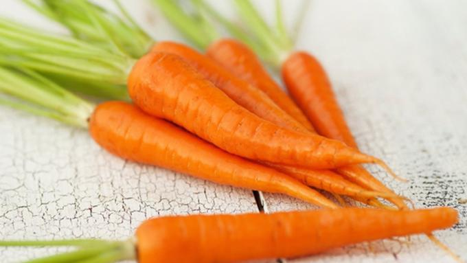

|
|
Home About Us Support Us Contact Us |
Bisa Cegah Penyakit Jantung dan Kanker, Ini 12 Manfaat Daun Wortel untuk Kesehatan Dikutip dari liputan6 Wortel sudah lama dikenal memiliki sumber vitamin A yang luar biasa. Wortel juga sumber beta karoten, serat, vitamin K1, kalium, dan antioksidan yang sangat baik. Biasanya, bagian wortel yang diambil keguanaannya, adalah umbi berwarna jingga. Umbi ini adanya di dalam tanah. Rasanya renyah, manis, enak, dan bergizi. Namun, selain batangnya, ada bagian lain dari wortel yang kaya manfaat. Daun pada wortel juga dapat dikonsumsi dan kaya manfaat. Daun wortel berbentuk mirip tumbuhan pakis, berwarna hijau muda, dan memiliki bunga putih kecil. Daun wortel kaya akan nutrisi. Sayuran ini bahkan mengandung sekitar enam kali lebih banyak vitamin C daripada akar, kalium, kalsium dan fitonutrien. Daun wortel bisa menjadi pilihan sayuran hijau untuk memenuhi kebutuhan serat harian. Cegah penyakit jantungStabilkan tekanan darah Daun wortel tinggi kalium. Kekurangan kalium dikaitkan dengan kenaikan tekanan darah. Konsumsi kalium dapat menstabilkan tekanan darah hingga kisaran normal. Peningkatan asupan kalium bersama dengan penurunan natrium sangat penting untuk mengurangi risiko penyakit darah tinggi. Cegah stroke Stroke Stroke adalah kondisi medis di mana aliran darah yang buruk ke otak menyebabkan kematian sel. Kondisi ini biasa disebabkan oleh tak terkontrolnya tekanan darah. Dengan mengonsumsi daun wortel yang kaya kalium. Anda akan terhindar dari tekanan darah tinggi dan risiko stroke. Sehatkan tulang dan ototTulang Daun wortel mengandung vitamin K dan klorofil yang penting untuk pertumbuhan tulang. Vitamin K penting untuk proses pembekuakn darah dan kepadatan tulang. Sementara klorofil mengandung sejumlah besar magnesium, membantu menjaga tulang tetap kuat. Klorofil yang baik untuk tulang ini bisa didapatkan dari sayuran hijau seperti daun wortel. Otot Perpaduan magnesium dan kalium juga bermanfaat bagi perkembangan otot. Kedua nutrisi ini membantu memperkuat otot dan meningkatkan aliran darah. Tidak cukup klorofil membuat tubuh kekurangan pasokan magnesium, dan kekurangan mineral ini bisa membuat otot lemah. Sehatkan pencernaan dan bantu dietSehatkan pencernaan Daun wortel kaya serat alami yang penting untuk pencernaan. Serat merangsang pergerakan usus, mendorong keluarnya limbah dari pencernaan dan meningkatkan penyerapan nutrisi. Klorofil dalam daun wortel juga mampu membersihkan usus besar dan menenangkannya. Bantu menurunkan berat badan Klorofil dalam daun wortel membantu menahan nafsu makan. Ini berkat cara kerjanya yang dapat menurunkan kadar gula darah. Gula darah yang tinggi dapat meningkatkan selera makan dan rasa lapar berlebih. Para peneliti mengungkapkan bahwa klorofil dapat membantu penurunan berat badan dengan mengurangi keinginan untuk makan makanan manis dan berlemak. Cegah anemia dan masalah ginjalAnemia Daun wortel mengandung kalium dan zat besi yang dapat mencegah anemia. Anemia bisa disebabkan oleh kekurangan zat besi di dalam tubuh. Selain itu, manfaat klorofil dalam daun wortel secara kimiawi mirip dengan hemoglobin. Hemoglobin berperan membawa oksigen ke seluruh tubuh seseorang, mencegah dan menyembuhkan anemia. Ginjal Daun wortel memiliki rasa pahit. Daun dengan rasa pahit dikenal dengan sifat diuretiknya yang kuat. Daun wortel bisa dimanfaatkan untuk membantu merangsang proses penyaringan ginjal dengan mempercepat aliran urin. Ini dapat mencegah dan mengatasi berbagai masalah ginjal seperti batu ginjal. Tingkatkan fungsi pengelihatan dan cegah kangkerMata sehat Daun wortel memiliki kandungan vitamin A yang tak kalah hebat dari umbinya. Vitamin A dikenal manfaatnya untuk meningkatkan fungsi pengelihatan. Daun wortel juga kaya akan vitamin C yang baik untuk mata. Vitamin C adalah salah satu antioksidan paling kuat dan salah satu yang paling penting untuk lensa mata. Vitamin ini membantu dalam produksi kolagen, yang membantu memperkuat kapiler, termasuk yang memberi nutrisi ke retina, dan mencegah katarak dengan melindungi lensa terhadap kerusakan akibat radikal bebas. Cegah kangker Vitamin C pada daun wortel juga bermanfaat sebagai antioksidan. Vitamin C dapat mengurangi keruskan sel DNA penyebab kanker. Vitamin ini dapat mengurangi perubahan peradangan yang memmungkinkan sel-sel ganas berkembang menjadi tumor berbahaya. Klorofil dalam daun wortel juga melakukan peran yang sama. Klorofil apat mencegah kerusakan DNA dan peroksidasi lipid, mengurangi risiko kanker. Sebuah studi kecil juga menemukan bahwa klorofil dapat Detoks tubuh dan cegah peradanganDetoks tubuh Klorofil juga berperan sebagai antioksidan yang bisa menetralkan molekul berbahaya di tubuh. Klorofil menghasilkan aliran oksigen dan darah yang lancar. Efek ini membantu tubuh menyingkirkan kotoran dan racun berbahaya. Konsumsi sayuran hijau seperti daun wortel dapat mengeluarkan bahan kimia beracun dan logam berat seperti merkuri dari tubuh. Cegah peradangan Vitamin C yang besar dalam daun wortel dapat meningkatkan sistem kekebalan tubuh. Efek ini dapat mencegah berbagai jenis peradangan yang ada. Daun wortel dapat mempercepat proses penyembuhan saat sakit, meredakan nyeri, dan mengatkan sistem kekebalan tubuh. | |
 © Healty © Healty |
|